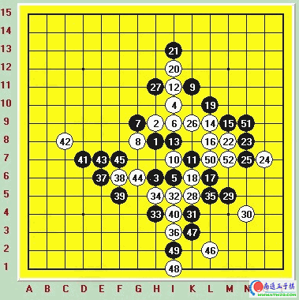

06上海名人战第四轮对朱建峰[图]（转自吴镝的QQ空间）
#1 06上海名人战第四轮对朱建峰[图]（转自吴镝的QQ空间） 作者：有志青年 发表时间：2007-3-14 17:12:39

黑：朱建锋
白：吴镝
白胜
这是06年3月上海名人战的第三轮，在前两轮我的发挥非常不好，一盘漏杀了一个VCF输掉对局，另外一盘艰苦和棋两轮过后只取得0.5分。可说成绩非常的差。但是陪同我一起沉沦的还有上海著名棋手朱建锋同学。他在前两轮竟然两败0分。这大概也是赛前很多人所没有想到的。第三轮我们两才同时苏醒过来各自取得了一胜。可是第四轮我们相遇了。面对谁取胜谁将从新回到第一集团，谁失败谁将彻底跌到谷地的关键时刻。产生了这盘经典的对局。
由于我们两人之间非常的熟悉，甚至可以模拟对方的行棋风格。所以开局上不敢开一些很过分的变化。实战正常瑞星开局。以下到10手定式，黑11是关键的一手，如果按照最正常的I8下法后面将由白12来进行变化的选择，这无疑对黑是不利的，但黑11任何其他变化如果白应对无误都将带来白的优势。这同样是黑所不乐于见到的。长考后朱建锋同学毅然下出实战的11手。这个11手在几十年前曾经非常流行，产生过大量经典的对局，但在最近几年的研究中已经确定白大优甚至必胜的结论。敢于走出这个变化也说明了朱建锋同学渴望胜利的决心和不怕死的觉悟。面对这个黑11后面的几手是不需要浪费时间去考虑的，20后的局面我并不了解。因为很少下这个黑11，不晓得后面黑会有什么强烈的欺骗手段。长考后考虑了黑的目的。黑棋单纯在右边是毫无取胜的机会。必然是要寻找合理的次序过渡到左边。22开始进行交换，23.25是我所没有预料到的。而朱建锋同学这两步下的非常的快。说明对后面的下法了然于胸。看来这就是他准备好的变化了。26交换正常28这里我又出现了严重的误算。因为黑棋现在右边材料丰富如果被黑抢到28的位置。下一手黑可以利用H5做出一套很具有威胁的VCF。看到那个形状我就没有进行深入的计算，认为黑在下边必然是可以必胜的。否则不会下的这么流畅。28无奈的选择了防守，29.31很流畅的次序，体现了朱建锋同学对形状的敏感。白现在局面很被动，这时候我产生了一丝疑惑，也许28防弱了。但实战的时间限制是不允许我多去思考前面的错误的。32.34.36事先预定的下法。36后白似乎成功把黑左右联系的目的破坏。但事实上给黑留下了31.33的活二。这个活二如果利用好是很恐怖的。37！很漂亮的一手，一股潮水般的气势从朱建锋同学身上向我扑来。38继续无奈进行防守，39更具有压迫性的一手。强行要和33.31的活二取得联系。如果真联系上了那这盘棋将很快结束。40必然，应该也是局部最关键的点了。虽然给了黑左边但白这里保留材料有一些巧妙的杀法。这个时候朱建锋同学面部开始变的红润，嘴角微微抽搐着压低声音问我是否投降认输。我很奇怪的望着他。难道一个活二就可以制我于死地吗。莫非他早上吃的糕点中含有兴奋剂成分？看我没有反应他微笑的捏起一颗棋子轻轻活了个三。毫无疑问42要继续跟随防止黑继续扩大自己的优势。43很快落下~他双手高举居高临下的对我微笑着...微笑着~这个时候我也开始微笑了，抬起头对他一脸灿烂的笑容，我轻声问道：你投吗？~他很惊讶的看着我，于是44手轻轻的落到了棋盘上，朱建锋同学依然奇怪的看着我顺手反了个活三。我的笑容更灿烂了。46.48.50。。当50手落下后朱建锋同学脸色突然从红润转变成白色。又瞬息间从白色变成青色。因为他发现了连珠中白棋特有的取胜规则。抓禁，抓四四禁~黑棋多么漂亮的两个活三啊，可惜当两个活三交汇于一点时却成为了死棋。连珠总是这么奇妙。可以让一个人从自信的顶点瞬间跌落，这盘棋结束了。一盘黑利用骗招取得前半段的优势可惜最后关头却遗漏了一个极其关键的部分。造成了从优势突然死亡的悲剧。这盘棋说明在棋盘上任何的疏忽大意都来不得。从头到尾都要兢兢业业，直到对手投子的一刻才可以放松~否则将会功败垂成~
第四轮结束后我成功再次杀入第一集团，可惜在面对阻击日本前名人山口真琴的关键对局中我也疏忽大意了一手，阻击失败，最后仅仅名列第七这样一个尴尬的名次~但当我站在领奖台上看着第12的证书时我忽然觉得我还算好了。那么伟大的一名棋手最后只取得第12是比我更痛苦的一件事情~悲哉！
后记：在06年10月第五届全国五子棋邀请赛中我们的朱建锋同学一雪一年的郁闷情绪，最后第一次取得了全国冠军，也第一次把冠军奖杯从北京棋手的垄断中夺了过来。祝贺他~
#2 Re:06上海名人战第四轮对朱建峰[图]（转自吴镝的QQ空间） 作者：五子天下 发表时间：2008-3-30 10:47:16
如果真联系上了那这盘棋将很快结束。40必然，应该也是局部最关键的点了。虽然给了黑左边但白这里保留材料有一些巧妙的杀法。这个时候朱建锋同学面部开始变的红润，嘴角微微抽搐着压低声音问我是否投降认输。我很奇怪的望着他。难道一个活二就可以制我于死地吗。莫非他早上吃的糕点中含有兴奋剂成分？看我没有反应他微笑的捏起一颗棋子轻轻活了个三。毫无疑问42要继续跟随防止黑继续扩大自己的优势。43很快落下~他双手高举居高临下的对我微笑着...微笑着~这个时候我也开始微笑了，抬起头对他一脸灿烂的笑容，我轻声问道：你投吗？~他很惊讶的看着我，于是44手轻轻的落到了棋盘上，朱建锋同学依然奇怪的看着我顺手反了个活三。我的笑容更灿烂了。46.48.50。。当50手落下后朱建锋同学脸色突然从红润转变成白色。又瞬息间从白色变成青色。
＝＝＝＝＝＝＝＝＝＝＝＝＝＝＝＝＝＝＝＝＝＝＝＝＝＝＝＝＝＝＝＝＝＝＝＝＝＝＝＝＝＝＝＝＝＝＝
很好～，很幽默～ 搞笑~~~~